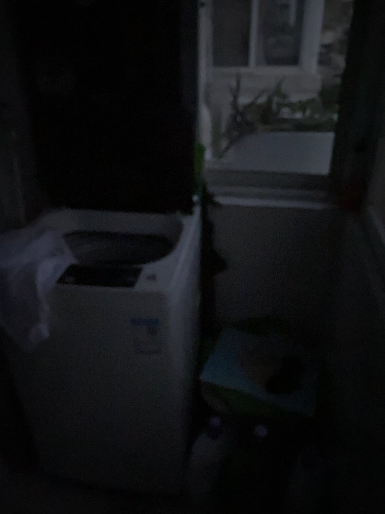
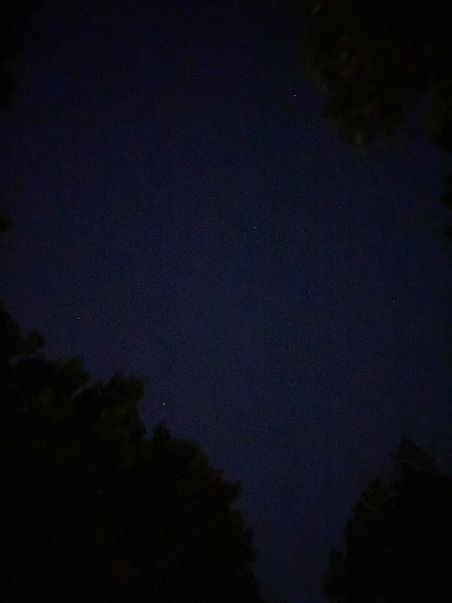
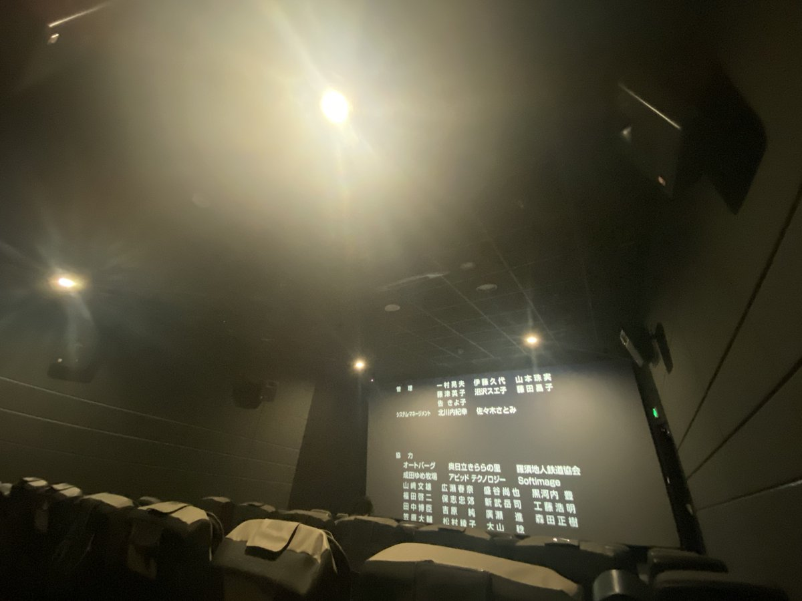

他们帮我打了辆车，我编了一个地址，在中华门老门东附近然后就沿着护城河边的小道走，被变态尾随，他和我保持着约100米的距离在身后不停淫笑，我难受地想吐感觉全身起鸡皮疙瘩，不知道跑了多远。天亮的好慢，我抵着树吐了一会，决定随便坐公交车，然后在车上睡着了，终点站在南京南站附近




那段日子让我难以忘怀，同学毫不犹豫让我住进他家。第一天我们都通宵了起床天阴阴的下着小雨一同下楼吃早饭。然后我就独自上街转悠买了好多旧书；第三天我突发奇想想去南京体育学院的大草坪上过夜，生火，不过没成功；就撑着脸坐在石凳子上发呆被一群跑山的人看见了，我轻描淡写说自己离家出走了 https://t.co/VSGeZcBOpy https://t.co/ZBYSbghqBX